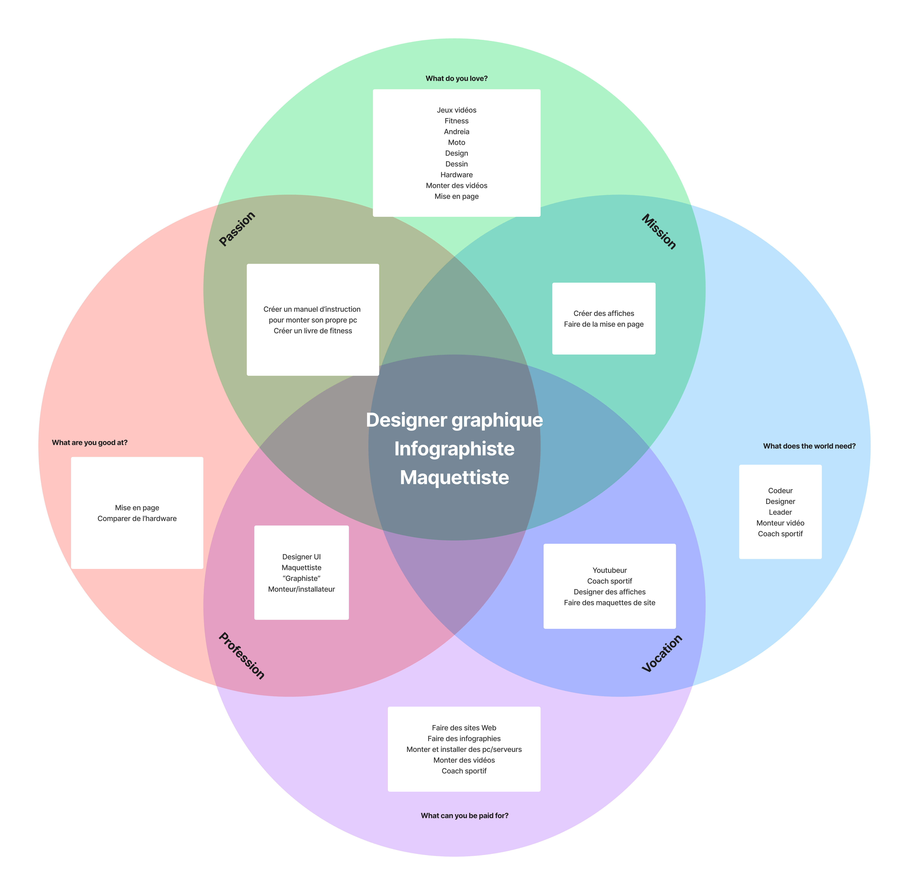

Afin de mettre en place mon système de veille, j'ai commencé par remplir un template d'Ikigaï pour définir mon métier de rêve. Même après avoir réalisé un CFC de médiamaticien, je n'étais pas bien sûr du domaine auquel je voulais toucher après les études.  1. Ikigaï pour définir mon métier de rêve
Le métier que j'ai pu sortir de cette expérience est "Infographiste".
Avec ceci, j'ai défini ma fiche de domaine pour savoir en détails
qu'elle était la taxonomie et les sous-domaines liés à mon métier.
J'ai également pu écrire textuellement pourquoi je voulais faire ce
métier avec une justification.
2. Fiche de domaine du métier d'infographiste
Pour en terminer avec cette partie, j'ai défini différentes catégories pour intégrer les liens inspirants que j'ai pu trouver :
J'ai essayé de suivre un maximum de blogs (que j'ai enregistrés dans les favoris de mon navigateur) et je me suis fixé comme objectif de les visiter régulièrement (chaque début de semaine) pour rester à jour au niveau des nouvelles tendances de mon domaine.
3. Catégories de mon système de veille
Avec ces différentes ressources, je vais pouvoir rester au goût du jour ou du moins espérer le rester et je vais pouvoir m'améliorer dans le domaine de l'infographie et aux autres activités liées. Cette veille me servira également pour revoir divers éléments déjà connus mais un peu délaissés avec les années.
{kind=link}
{kind=link}
{kind=link}